<!DOCTYPE html>
<html lang="en">
<head>
  <meta charset="utf-8">
  <meta name="viewport" content="width=device-width, initial-scale=1.0">
  <title>Chapter 3 (Pages 47-66) - Class 9 Basic_science</title>
  <style>

:root {
  --bg-color: #fcfcfd;
  --card-bg: #ffffff;
  --text-color: #1e293b;
  --text-muted: #64748b;
  --primary-color: #0284c7;
  --primary-light: #e0f2fe;
  --border-color: #e2e8f0;
  --radius: 10px;
  --shadow: 0 4px 6px -1px rgb(0 0 0 / 0.05), 0 2px 4px -2px rgb(0 0 0 / 0.05);
}

body {
  font-family: -apple-system, BlinkMacSystemFont, "Segoe UI", Roboto, "Noto Sans Malayalam", "Manjari", "Gayathri", sans-serif;
  background-color: var(--bg-color);
  color: var(--text-color);
  line-height: 1.8;
  font-size: 1.1rem;
  margin: 0;
  padding: 0;
}

.container {
  max-width: 860px;
  margin: 0 auto;
  padding: 2.5rem 1.5rem 5rem 1.5rem;
}

header {
  margin-bottom: 2.5rem;
  padding-bottom: 1.5rem;
  border-bottom: 2px solid var(--border-color);
}

.badge-row {
  display: flex;
  gap: 0.5rem;
  margin-bottom: 0.75rem;
  flex-wrap: wrap;
}

.badge {
  display: inline-block;
  font-size: 0.75rem;
  font-weight: 700;
  text-transform: uppercase;
  letter-spacing: 0.05em;
  padding: 0.25rem 0.65rem;
  border-radius: 9999px;
  background: var(--primary-light);
  color: var(--primary-color);
}

.badge-medium {
  background: #fef3c7;
  color: #b45309;
}

.badge-class {
  background: #dcfce7;
  color: #15803d;
}

h1 {
  font-size: 2.1rem;
  font-weight: 800;
  margin: 0.5rem 0 1rem 0;
  line-height: 1.3;
  color: #0f172a;
}

.nav-bar {
  display: flex;
  justify-content: space-between;
  margin: 1.5rem 0;
  font-size: 0.95rem;
  flex-wrap: wrap;
  gap: 0.5rem;
}

.nav-bar a {
  color: var(--primary-color);
  text-decoration: none;
  font-weight: 600;
  padding: 0.5rem 1rem;
  border-radius: var(--radius);
  background: var(--card-bg);
  border: 1px solid var(--border-color);
  transition: all 0.2s ease;
}

.nav-bar a:hover {
  background: var(--primary-light);
  border-color: var(--primary-color);
}

.nav-bar .disabled {
  color: var(--text-muted);
  pointer-events: none;
  border-color: transparent;
  background: transparent;
}

.page-section {
  background: var(--card-bg);
  border: 1px solid var(--border-color);
  border-radius: var(--radius);
  box-shadow: var(--shadow);
  padding: 2rem;
  margin-bottom: 2.5rem;
}

.page-header {
  display: flex;
  align-items: center;
  justify-content: space-between;
  margin-bottom: 1.25rem;
  padding-bottom: 0.5rem;
  border-bottom: 1px dashed var(--border-color);
}

.page-number {
  font-size: 0.8rem;
  font-weight: 700;
  text-transform: uppercase;
  color: var(--text-muted);
  letter-spacing: 0.05em;
}

.page-content p {
  margin: 0 0 1.25rem 0;
  white-space: pre-wrap;
  word-break: break-word;
}

.page-content p:last-child {
  margin-bottom: 0;
}

.diagram-card {
  margin: 2rem 0;
  text-align: center;
  background: #f8fafc;
  border: 1px solid var(--border-color);
  border-radius: var(--radius);
  padding: 1rem;
  overflow: hidden;
}

.diagram-card img {
  max-width: 100%;
  height: auto;
  border-radius: calc(var(--radius) - 4px);
  display: inline-block;
  box-shadow: 0 2px 4px rgba(0,0,0,0.04);
}

.diagram-card figcaption {
  font-size: 0.85rem;
  color: var(--text-muted);
  margin-top: 0.75rem;
  font-weight: 500;
}

footer {
  margin-top: 3rem;
  padding-top: 2rem;
  border-top: 2px solid var(--border-color);
}

  </style>
</head>
<body>
  <div class="container">
    <header>
      <div class="badge-row">
        <span class="badge badge-class">Class 9</span>
        <span class="badge badge-medium">English Medium</span>
        <span class="badge">Basic science</span>
        <span class="badge">Part 1</span>
      </div>
      <h1>Chapter 3 (Pages 47-66)</h1>
      <div class="nav-bar"><a href="part_1_chapter_02.html">← Chapter 2 (Pages 27-46)</a><a href="index.html">☰ Index</a><a href="part_1_chapter_04.html">Chapter 4 (Pages 67-86) →</a></div>
    </header>
    <main>
      <section class="page-section" id="page-47">
  <div class="page-header"><span class="page-number">Page 47</span></div>
  <figure class="diagram-card" id="fig_ch03_p047_01"><figcaption>Figure fig_ch03_p047_01 (Page 47)</figcaption></figure>
  <figure class="diagram-card" id="fig_ch03_p047_02"><figcaption>Figure fig_ch03_p047_02 (Page 47)</figcaption></figure>
  <figure class="diagram-card" id="fig_ch03_p047_03"><figcaption>Figure fig_ch03_p047_03 (Page 47)</figcaption></figure>
  <figure class="diagram-card" id="fig_ch03_p047_04"><figcaption>Figure fig_ch03_p047_04 (Page 47)</figcaption></figure>
  <figure class="diagram-card" id="fig_ch03_p047_05"><figcaption>Figure fig_ch03_p047_05 (Page 47)</figcaption></figure>
  <figure class="diagram-card" id="fig_ch03_p047_06"><figcaption>Figure fig_ch03_p047_06 (Page 47)</figcaption></figure>
  <figure class="diagram-card" id="fig_ch03_p047_07"><figcaption>Figure fig_ch03_p047_07 (Page 47)</figcaption></figure>
  <figure class="diagram-card" id="fig_ch03_p047_08"><figcaption>Figure fig_ch03_p047_08 (Page 47)</figcaption></figure>
  <div class="page-content">
    <p>Land Grants and the Indian Society</p>
    <p>Land Grants
Among these dynasties, the Satavahanas who ruled the
Deccan region, started the practice of giving land grants
to please the Brahmins who were dominant in the society.
This system became wide-spread under the Guptas who
FDPHWRSRZHULQ3DWDOLSXWUDE\WKHEHJLQQLQJRIWKHth
century CE.</p>
    <p>Differences in Land Grants</p>
    <p>The Satavahanas</p>
    <p>Right to the resources of the
land only was given</p>
    <p>Gupta kings
Srigupta was the
founder of the Gupta
kingdom. The other
important kings of the
dynasty were:
‹</p>
    <p>Chandragupta I</p>
    <p>‹</p>
    <p>Samudragupta</p>
    <p>‹</p>
    <p>Chandragupta II</p>
    <p>‹</p>
    <p>Kumaragupta I</p>
    <p>‹</p>
    <p>Skandagupta</p>
    <p>The Guptas</p>
    <p>Along with the resources
of the land, rights over the
people living there also
were transferred</p>
    <p>Let’s look at the changes brought about by the land grants
during the Gupta period.
z</p>
    <p>The king’s authority over the donated land gradually declined.</p>
    <p>z</p>
    <p>The right to collect taxes and administer justice over the donated land
was transferred along with the ownership of land.</p>
    <p>z</p>
    <p>Those who received the land grants also got the right to grant the
land to someone else.</p>
    <p>z</p>
    <p>In course of time, the kings and nobles began to give land grants
instead of cash as remuneration for the services they received.</p>
    <p>z</p>
    <p>Although most of the land grants were received by the Brahmins,
gradually, other sections also started receiving land as grant.</p>
    <p>Standard IX</p>
    <p>47</p>
  </div>
</section><section class="page-section" id="page-48">
  <div class="page-header"><span class="page-number">Page 48</span></div>
  <figure class="diagram-card" id="fig_ch03_p048_01"><figcaption>Figure fig_ch03_p048_01 (Page 48)</figcaption></figure>
  <figure class="diagram-card" id="fig_ch03_p048_02"><figcaption>Figure fig_ch03_p048_02 (Page 48)</figcaption></figure>
  <figure class="diagram-card" id="fig_ch03_p048_03"><figcaption>Figure fig_ch03_p048_03 (Page 48)</figcaption></figure>
  <figure class="diagram-card" id="fig_ch03_p048_04"><figcaption>Figure fig_ch03_p048_04 (Page 48)</figcaption></figure>
  <figure class="diagram-card" id="fig_ch03_p048_05"><figcaption>Figure fig_ch03_p048_05 (Page 48)</figcaption></figure>
  <figure class="diagram-card" id="fig_ch03_p048_06"><figcaption>Figure fig_ch03_p048_06 (Page 48)</figcaption></figure>
  <figure class="diagram-card" id="fig_ch03_p048_07"><figcaption>Figure fig_ch03_p048_07 (Page 48)</figcaption></figure>
  <figure class="diagram-card" id="fig_ch03_p048_08"><figcaption>Figure fig_ch03_p048_08 (Page 48)</figcaption></figure>
  <div class="page-content">
    <p>Chapter 3</p>
    <p>With the widespread practice of land grants, a powerful section
RIODQGRZQHUVZLWKLPPHQVHZHDOWKDQGLQÁXHQFHZDVIRUPHG
in the society. Those who worked on the land became rightless
dependents of the landlords. In such a system, the farmers, the
agricultural labourers and the slaves were bound to the land.
They lived and died in the same soil where they were born. They
laboured throughout their life for their masters. In addition to
taxes, these people from the lower stratum of the society had
to provide free services to the upper stratum. This system has
been called ‘Indian Feudalism’. During this period, there was a
remarkable improvement in the agriculture sector.
Factors that helped the spread of agriculture
Even the uncultivated areas were made suitable for
agriculture
z
7KHQHZVRFLDOV\VWHPSURYLGHGVXIÀFLHQWODERXUIRUFH
for agriculture
z
The knowledge of Brahmins about agricultural technology
and climate
z Different irrigation facilities
z</p>
    <p>Let us see the irrigation methods that helped the expansion of
agriculture.
Canals
Water raised from wells
reached farmland through
channels
Dams
Skandagupta rebuilt
the Sudarsana Lake
in Gujarat</p>
    <p>Irrigation
facilities
during
the Gupta
period</p>
    <p>Rainwater
The most important
source of water</p>
    <p>48</p>
    <p>Social Science I</p>
    <p>Tank/ Water
Reservoir
‹ Rainwater was
collected and used for
agriculture
‹ Water reservoirs were
built in South India
‹ Tanks were constructed
in North India</p>
    <p>Ghatiyantra (Araghata)
Pots are attached to a wheel.
When the wheel is rotated the
SRWVDUH¿OOHGIURPWKH
source and emptied
LQWRWKH¿HOG</p>
  </div>
</section><section class="page-section" id="page-49">
  <div class="page-header"><span class="page-number">Page 49</span></div>
  <figure class="diagram-card" id="fig_ch03_p049_01"><figcaption>Figure fig_ch03_p049_01 (Page 49)</figcaption></figure>
  <figure class="diagram-card" id="fig_ch03_p049_02"><figcaption>Figure fig_ch03_p049_02 (Page 49)</figcaption></figure>
  <figure class="diagram-card" id="fig_ch03_p049_03"><figcaption>Figure fig_ch03_p049_03 (Page 49)</figcaption></figure>
  <figure class="diagram-card" id="fig_ch03_p049_04"><figcaption>Figure fig_ch03_p049_04 (Page 49)</figcaption></figure>
  <figure class="diagram-card" id="fig_ch03_p049_05"><figcaption>Figure fig_ch03_p049_05 (Page 49)</figcaption></figure>
  <figure class="diagram-card" id="fig_ch03_p049_06">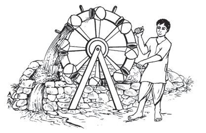<figcaption>Figure fig_ch03_p049_06 (Page 49)</figcaption></figure>
  <figure class="diagram-card" id="fig_ch03_p049_07"><figcaption>Figure fig_ch03_p049_07 (Page 49)</figcaption></figure>
  <figure class="diagram-card" id="fig_ch03_p049_08"><figcaption>Figure fig_ch03_p049_08 (Page 49)</figcaption></figure>
  <figure class="diagram-card" id="fig_ch03_p049_09"><figcaption>Figure fig_ch03_p049_09 (Page 49)</figcaption></figure>
  <figure class="diagram-card" id="fig_ch03_p049_10"><figcaption>Figure fig_ch03_p049_10 (Page 49)</figcaption></figure>
  <figure class="diagram-card" id="fig_ch03_p049_11"><figcaption>Figure fig_ch03_p049_11 (Page 49)</figcaption></figure>
  <div class="page-content">
    <p>Land Grants and the Indian Society</p>
    <p>Discuss the characteristics
of the Samantha System
that came into existence
during the Gupta period.</p>
    <p>Crafts and Trade
Ghatiyantra (Araghata)
Expansion of agriculture that resulted
from land grants led to the growth of non-agricultural activities
WRR3HRSOHWRRNWRGLIIHUHQWFUDIWVLQRUGHUWRPDNHDOLYLQJ7KH
literary works and artefacts of this period give us information
regarding the crafts of the period. Given below is the information
regarding the artefacts received from the excavation of sites
corresponding to the period. Find out the arts and crafts of the
period from the information and complete the table.</p>
    <p>Artifacts Recovered
z(DUWKHQ3RWV</p>
    <p>Crafts
z</p>
    <p>3RWWHU\PDNLQJ</p>
    <p>z</p>
    <p>..............................................................................................................................</p>
    <p>z3HDUOV</p>
    <p>z</p>
    <p>..............................................................................................................................</p>
    <p>zGlassware</p>
    <p>z</p>
    <p>..............................................................................................................................</p>
    <p>zSilk, cotton textiles</p>
    <p>z</p>
    <p>..............................................................................................................................</p>
    <p>zSculptures in ivory</p>
    <p>z</p>
    <p>..............................................................................................................................</p>
    <p>z</p>
    <p>Jewellery made of gold, silver and
precious stones</p>
    <p>3HRSOHHQJDJHGLQWKHVDPHFUDIWJUDGXDOO\
formed associations. These came to be
called ‘Guilds’ or ‘Srenis’. Governments
UDWLÀHGWKH¶6UHQLV·0HPEHUVRID¶6UHQL·
had to abide by its rules.</p>
    <p>Srenis
‘Srenis’ were associations of craftsmen
and traders. Collecting raw-materials,
controlling production and marketing
the finished goods were their
responsibilities.</p>
    <p>Standard IX</p>
    <p>49</p>
  </div>
</section><section class="page-section" id="page-50">
  <div class="page-header"><span class="page-number">Page 50</span></div>
  <figure class="diagram-card" id="fig_ch03_p050_01"><figcaption>Figure fig_ch03_p050_01 (Page 50)</figcaption></figure>
  <figure class="diagram-card" id="fig_ch03_p050_02"><figcaption>Figure fig_ch03_p050_02 (Page 50)</figcaption></figure>
  <figure class="diagram-card" id="fig_ch03_p050_03"><figcaption>Figure fig_ch03_p050_03 (Page 50)</figcaption></figure>
  <figure class="diagram-card" id="fig_ch03_p050_04"><figcaption>Figure fig_ch03_p050_04 (Page 50)</figcaption></figure>
  <figure class="diagram-card" id="fig_ch03_p050_05"><figcaption>Figure fig_ch03_p050_05 (Page 50)</figcaption></figure>
  <figure class="diagram-card" id="fig_ch03_p050_06"><figcaption>Figure fig_ch03_p050_06 (Page 50)</figcaption></figure>
  <figure class="diagram-card" id="fig_ch03_p050_07"><figcaption>Figure fig_ch03_p050_07 (Page 50)</figcaption></figure>
  <figure class="diagram-card" id="fig_ch03_p050_08"><figcaption>Figure fig_ch03_p050_08 (Page 50)</figcaption></figure>
  <figure class="diagram-card" id="fig_ch03_p050_09"><figcaption>Figure fig_ch03_p050_09 (Page 50)</figcaption></figure>
  <figure class="diagram-card" id="fig_ch03_p050_10"><figcaption>Figure fig_ch03_p050_10 (Page 50)</figcaption></figure>
  <figure class="diagram-card" id="fig_ch03_p050_11">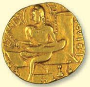<figcaption>Figure fig_ch03_p050_11 (Page 50)</figcaption></figure>
  <figure class="diagram-card" id="fig_ch03_p050_12">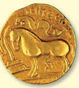<figcaption>Figure fig_ch03_p050_12 (Page 50)</figcaption></figure>
  <figure class="diagram-card" id="fig_ch03_p050_13">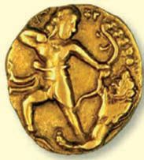<figcaption>Figure fig_ch03_p050_13 (Page 50)</figcaption></figure>
  <figure class="diagram-card" id="fig_ch03_p050_14"><figcaption>Figure fig_ch03_p050_14 (Page 50)</figcaption></figure>
  <figure class="diagram-card" id="fig_ch03_p050_15">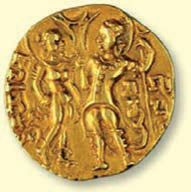<figcaption>Figure fig_ch03_p050_15 (Page 50)</figcaption></figure>
  <figure class="diagram-card" id="fig_ch03_p050_16">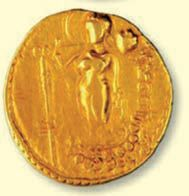<figcaption>Figure fig_ch03_p050_16 (Page 50)</figcaption></figure>
  <figure class="diagram-card" id="fig_ch03_p050_17">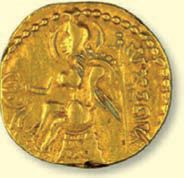<figcaption>Figure fig_ch03_p050_17 (Page 50)</figcaption></figure>
  <figure class="diagram-card" id="fig_ch03_p050_18">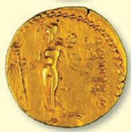<figcaption>Figure fig_ch03_p050_18 (Page 50)</figcaption></figure>
  <figure class="diagram-card" id="fig_ch03_p050_19"><figcaption>Figure fig_ch03_p050_19 (Page 50)</figcaption></figure>
  <figure class="diagram-card" id="fig_ch03_p050_20"><figcaption>Figure fig_ch03_p050_20 (Page 50)</figcaption></figure>
  <figure class="diagram-card" id="fig_ch03_p050_21"><figcaption>Figure fig_ch03_p050_21 (Page 50)</figcaption></figure>
  <figure class="diagram-card" id="fig_ch03_p050_22"><figcaption>Figure fig_ch03_p050_22 (Page 50)</figcaption></figure>
  <div class="page-content">
    <p>Chapter 3</p>
    <p>Trade and Commerce
,QWHUQDO WUDGH ÁRXULVKHG GXULQJ WKH LQLWLDO \HDUV RI WKH *XSWD
rule. We have understood from the table above that various
crafts existed along with agriculture. Such products made by the
skilled craftsmen were the chief items of trade. Textiles
was one of the most traded products. Different types of
textiles (muslin, calico, linen) were manufactured on a
large scale.
Nagarathaar</p>
    <p>(Nagarasreshtin)
These wealthy merchants
of the cities had a role
in administration also.
Besides, they were
prominent members of
the merchant guilds.</p>
    <p>The Guptas had external trade links with West Asia,
Central Asia, South East Asia, and Rome. New trade
routes developed during the period. Gold, silver and
FRSSHU FRLQV RI KLJK TXDOLW\ ZHUH PLQWHG 3URPLQHQW
traders known as ‘Nagarasreshtin’ and ‘Sarthvaha’
KDGWKHLUUROHLQWKHJRYHUQPHQW9DLVKDOL3DWDOLSXWUD
Kanauj, Shravasti, Kausambi, Ujjayini and Mathura
were important centres of trade.</p>
    <p>Gupta Coins</p>
    <p>50</p>
    <p>Social Science I</p>
  </div>
</section><section class="page-section" id="page-51">
  <div class="page-header"><span class="page-number">Page 51</span></div>
  <figure class="diagram-card" id="fig_ch03_p051_01"><figcaption>Figure fig_ch03_p051_01 (Page 51)</figcaption></figure>
  <figure class="diagram-card" id="fig_ch03_p051_02"><figcaption>Figure fig_ch03_p051_02 (Page 51)</figcaption></figure>
  <figure class="diagram-card" id="fig_ch03_p051_03"><figcaption>Figure fig_ch03_p051_03 (Page 51)</figcaption></figure>
  <figure class="diagram-card" id="fig_ch03_p051_04"><figcaption>Figure fig_ch03_p051_04 (Page 51)</figcaption></figure>
  <figure class="diagram-card" id="fig_ch03_p051_05"><figcaption>Figure fig_ch03_p051_05 (Page 51)</figcaption></figure>
  <div class="page-content">
    <p>Land Grants and the Indian Society</p>
    <p>Some important cities of the Gupta period
Map 2</p>
    <p>Kanauj Shravasti
Vaishali
Mathura
3DWDOLSXWUD
Kausambi
Ujjayini</p>
    <p>Find out in which present Indian states are the Gupta cities
marked in the above map, located.
z.....................................................................................................................................................................................
z.....................................................................................................................................................................................
z.....................................................................................................................................................................................
z.....................................................................................................................................................................................
z.....................................................................................................................................................................................
z.....................................................................................................................................................................................
z.....................................................................................................................................................................................
z....................................................................................................................................................................................</p>
    <p>Standard IX</p>
    <p>51</p>
  </div>
</section><section class="page-section" id="page-52">
  <div class="page-header"><span class="page-number">Page 52</span></div>
  <figure class="diagram-card" id="fig_ch03_p052_01"><figcaption>Figure fig_ch03_p052_01 (Page 52)</figcaption></figure>
  <figure class="diagram-card" id="fig_ch03_p052_02"><figcaption>Figure fig_ch03_p052_02 (Page 52)</figcaption></figure>
  <figure class="diagram-card" id="fig_ch03_p052_03"><figcaption>Figure fig_ch03_p052_03 (Page 52)</figcaption></figure>
  <figure class="diagram-card" id="fig_ch03_p052_04"><figcaption>Figure fig_ch03_p052_04 (Page 52)</figcaption></figure>
  <figure class="diagram-card" id="fig_ch03_p052_05"><figcaption>Figure fig_ch03_p052_05 (Page 52)</figcaption></figure>
  <figure class="diagram-card" id="fig_ch03_p052_06"><figcaption>Figure fig_ch03_p052_06 (Page 52)</figcaption></figure>
  <figure class="diagram-card" id="fig_ch03_p052_07"><figcaption>Figure fig_ch03_p052_07 (Page 52)</figcaption></figure>
  <div class="page-content">
    <p>Chapter 3</p>
    <p>India’s foreign trade declined following the collapse of the Roman
Empire by the 6th century CE. Another reason for this was that
the westerners had learned the technique of silk-making from the
Chinese. Decline of foreign trade adversely affected the internal
trade also. There was a dip in the movement of the craftsmen and
artisans to different parts of the country for trade purposes. They
FRQÀQHGWKHPVHOYHVWRWKHLUYLOODJHV7KLVOHGWRWKHUXUDOLVDWLRQ
of arts and crafts. The slump in trade, the general decline in crafts
and ruralisation led to the decay of many major towns. Cities
like Kausambi, Hastinapura, Ahicchatra, Takshasila, Ayodhya,
8MMD\LQLDQG0DWKXUDORVWWKHLUJORU\3ODFHVWKDWZHUHGHVFULEHG
by the 5th century Chinese traveller Fa-Hien as large cities were
mentioned by the 7th century traveller Hiuen Tsang as villages.
This description indicates the urban decay during the period.</p>
    <p>Social Life
We have already discussed the various occupational groups
(Srenis) that were formed in the Gupta period. The entry of
new occupational groups and the coming of new peoples led
to the formation of a number of sub-divisions in the society. It
was impossible for the existing varna system to accommodate
all these new occupational groups. In this circumstance, each
occupational group became a new ‘jati’ or ‘upajati’. Besides
the occupational groups, people who came from outside the
subcontinent, the forest dwellers (‘Nishadas’) and children born
of inter-caste marriages also formed new ‘jatis’. This made the
caste system more complex.</p>
    <p>52</p>
    <p>Social Science I</p>
  </div>
</section><section class="page-section" id="page-53">
  <div class="page-header"><span class="page-number">Page 53</span></div>
  <figure class="diagram-card" id="fig_ch03_p053_01"><figcaption>Figure fig_ch03_p053_01 (Page 53)</figcaption></figure>
  <figure class="diagram-card" id="fig_ch03_p053_02"><figcaption>Figure fig_ch03_p053_02 (Page 53)</figcaption></figure>
  <figure class="diagram-card" id="fig_ch03_p053_03"><figcaption>Figure fig_ch03_p053_03 (Page 53)</figcaption></figure>
  <figure class="diagram-card" id="fig_ch03_p053_04"><figcaption>Figure fig_ch03_p053_04 (Page 53)</figcaption></figure>
  <figure class="diagram-card" id="fig_ch03_p053_05"><figcaption>Figure fig_ch03_p053_05 (Page 53)</figcaption></figure>
  <figure class="diagram-card" id="fig_ch03_p053_06"><figcaption>Figure fig_ch03_p053_06 (Page 53)</figcaption></figure>
  <figure class="diagram-card" id="fig_ch03_p053_07"><figcaption>Figure fig_ch03_p053_07 (Page 53)</figcaption></figure>
  <figure class="diagram-card" id="fig_ch03_p053_08"><figcaption>Figure fig_ch03_p053_08 (Page 53)</figcaption></figure>
  <figure class="diagram-card" id="fig_ch03_p053_09"><figcaption>Figure fig_ch03_p053_09 (Page 53)</figcaption></figure>
  <figure class="diagram-card" id="fig_ch03_p053_10"><figcaption>Figure fig_ch03_p053_10 (Page 53)</figcaption></figure>
  <div class="page-content">
    <p>Land Grants and the Indian Society</p>
    <p>There was no change in the position and privileges of the
Brahmins, Kshatriyas and Vaisyas in the new
complex system that evolved. The Chinese
traveller Hiuen Tsang who visited India in the
seventh century described Sudras as peasants.
These descriptions indicate the social status of
the Sudras in an agricultural society.
The</p>
    <p>‘Antyajas’</p>
    <p>Chaturvarnya</p>
    <p>who</p>
    <p>were</p>
    <p>system</p>
    <p>were</p>
    <p>outside</p>
    <p>the</p>
    <p>considered</p>
    <p>‘untouchables’. Accordingly, the lowest among
the ‘Antyajas’ were the graveyard keepers
called ‘Chandalas’ and the animal skin tanners
called ‘Charmakarar’.</p>
    <p>Position of Women</p>
    <p>‘Anuloma’ and ‘Pratiloma’
Marriages
Arthasastra refers to inter-caste
marriages. Marriage between a
groom from a caste considered
upper and a bride from a caste
considered lower was called
‘Anuloma’ marriage.
Marriage between a bride from
a caste considered upper and a
groom from a caste considered
ORZHU ZDV FDOOHG 3UDWLORPD·
marriage.</p>
    <p>Generally, women had a low status in society,
HYHQWKRXJKDIHZTXHHQVOLNH3UDEKDYDWL*XSWDRIWKH9DNDWDND
dynasty were held in high esteem. All women, from queens to
the women of the lowest section in the society, were expected
to be submissive to men. Even the upper-class women did not
enjoy a high position or consideration in the society. There is no
evidence of land grants received by even a Brahmin woman.</p>
    <p>Chandalas in the Description of Fa Hien
The Chinese Buddhist traveller Fa Hien who visited India during the reign of
Chandragupta II in the 5th century CE, gives this description: “When Chandalas
enter a city, or a market, they should make sounds by beating a wooden plank.
This was done to inform the higher caste people about their coming in advance
and to move away.”</p>
    <p>Standard IX</p>
    <p>53</p>
  </div>
</section><section class="page-section" id="page-54">
  <div class="page-header"><span class="page-number">Page 54</span></div>
  <figure class="diagram-card" id="fig_ch03_p054_01"><figcaption>Figure fig_ch03_p054_01 (Page 54)</figcaption></figure>
  <figure class="diagram-card" id="fig_ch03_p054_02"><figcaption>Figure fig_ch03_p054_02 (Page 54)</figcaption></figure>
  <figure class="diagram-card" id="fig_ch03_p054_03"><figcaption>Figure fig_ch03_p054_03 (Page 54)</figcaption></figure>
  <figure class="diagram-card" id="fig_ch03_p054_04"><figcaption>Figure fig_ch03_p054_04 (Page 54)</figcaption></figure>
  <figure class="diagram-card" id="fig_ch03_p054_05"><figcaption>Figure fig_ch03_p054_05 (Page 54)</figcaption></figure>
  <figure class="diagram-card" id="fig_ch03_p054_06"><figcaption>Figure fig_ch03_p054_06 (Page 54)</figcaption></figure>
  <figure class="diagram-card" id="fig_ch03_p054_07"><figcaption>Figure fig_ch03_p054_07 (Page 54)</figcaption></figure>
  <figure class="diagram-card" id="fig_ch03_p054_08"><figcaption>Figure fig_ch03_p054_08 (Page 54)</figcaption></figure>
  <figure class="diagram-card" id="fig_ch03_p054_09"><figcaption>Figure fig_ch03_p054_09 (Page 54)</figcaption></figure>
  <figure class="diagram-card" id="fig_ch03_p054_10">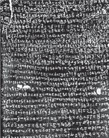<figcaption>Figure fig_ch03_p054_10 (Page 54)</figcaption></figure>
  <figure class="diagram-card" id="fig_ch03_p054_11"><figcaption>Figure fig_ch03_p054_11 (Page 54)</figcaption></figure>
  <figure class="diagram-card" id="fig_ch03_p054_12"><figcaption>Figure fig_ch03_p054_12 (Page 54)</figcaption></figure>
  <figure class="diagram-card" id="fig_ch03_p054_13"><figcaption>Figure fig_ch03_p054_13 (Page 54)</figcaption></figure>
  <figure class="diagram-card" id="fig_ch03_p054_14"><figcaption>Figure fig_ch03_p054_14 (Page 54)</figcaption></figure>
  <figure class="diagram-card" id="fig_ch03_p054_15"><figcaption>Figure fig_ch03_p054_15 (Page 54)</figcaption></figure>
  <figure class="diagram-card" id="fig_ch03_p054_16"><figcaption>Figure fig_ch03_p054_16 (Page 54)</figcaption></figure>
  <figure class="diagram-card" id="fig_ch03_p054_17"><figcaption>Figure fig_ch03_p054_17 (Page 54)</figcaption></figure>
  <figure class="diagram-card" id="fig_ch03_p054_18"><figcaption>Figure fig_ch03_p054_18 (Page 54)</figcaption></figure>
  <figure class="diagram-card" id="fig_ch03_p054_19"><figcaption>Figure fig_ch03_p054_19 (Page 54)</figcaption></figure>
  <div class="page-content">
    <p>Chapter 3</p>
    <p>State: Central Authority and Local Power
“Equal to Kubera, Varuna, Indra and Anthaka and with no
equal rival on the face of the Earth…”
7KHVHZRUGVDUHIURPWKH3UD\DJDSUDVDVWLVLWXDWHG
in Allahabad which tells us about Samudragupta, the
most powerful ruler of Gupta period.
What do you understand from this text about the powers of the
king during the Gupta period?
z</p>
    <p>The king was considered equal to God</p>
    <p>z</p>
    <p>Village
Administration
Gupta kings had extensive powers. At the same time, they
During the Gupta had some responsibilities as well. Let us have a look at them.
Period
‘Gramapati’ or
‘Gramadhyaksha’
was the head of
village administration
during the Gupta
period. The disputes
in the village
were settled by
‘Gramavriddhar’, a
group of elders in the
village. Majority of
the village dwellers
were peasants.
Carpenters, weavers
and herdsmen were
also there. Their
communities also
were represented
in the village
administration.</p>
    <p>54</p>
    <p>Social Science I</p>
    <p>3URWHFWWKHSHRSOHIURP
aggressions
3URWHFW%UDKPLQV6UDPDQDV %XGGKLVW
Jain monks) and the weaker sections
Administration of justice
The Guptas allowed the rulers of the territories they
conquered to continue as ‘Samanthas’ of the Gupta kingdom.
They were given autonomy in their respective areas. The
Guptas did not interfere in their matters of administration or
succession. But they developed an elaborate administrative
system in the areas where they ruled directly.</p>
    <p>3UHSDUHDQRWHFRPSDULQJWKHDGPLQLVWUDWLYHV\VWHPV
of the Mauryas and the Guptas.</p>
  </div>
</section><section class="page-section" id="page-55">
  <div class="page-header"><span class="page-number">Page 55</span></div>
  <figure class="diagram-card" id="fig_ch03_p055_01"><figcaption>Figure fig_ch03_p055_01 (Page 55)</figcaption></figure>
  <figure class="diagram-card" id="fig_ch03_p055_02"><figcaption>Figure fig_ch03_p055_02 (Page 55)</figcaption></figure>
  <figure class="diagram-card" id="fig_ch03_p055_03"><figcaption>Figure fig_ch03_p055_03 (Page 55)</figcaption></figure>
  <figure class="diagram-card" id="fig_ch03_p055_04"><figcaption>Figure fig_ch03_p055_04 (Page 55)</figcaption></figure>
  <figure class="diagram-card" id="fig_ch03_p055_05"><figcaption>Figure fig_ch03_p055_05 (Page 55)</figcaption></figure>
  <figure class="diagram-card" id="fig_ch03_p055_06"><figcaption>Figure fig_ch03_p055_06 (Page 55)</figcaption></figure>
  <figure class="diagram-card" id="fig_ch03_p055_07">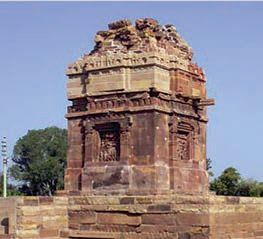<figcaption>Figure fig_ch03_p055_07 (Page 55)</figcaption></figure>
  <figure class="diagram-card" id="fig_ch03_p055_08"><figcaption>Figure fig_ch03_p055_08 (Page 55)</figcaption></figure>
  <figure class="diagram-card" id="fig_ch03_p055_09"><figcaption>Figure fig_ch03_p055_09 (Page 55)</figcaption></figure>
  <figure class="diagram-card" id="fig_ch03_p055_10"><figcaption>Figure fig_ch03_p055_10 (Page 55)</figcaption></figure>
  <figure class="diagram-card" id="fig_ch03_p055_11"><figcaption>Figure fig_ch03_p055_11 (Page 55)</figcaption></figure>
  <figure class="diagram-card" id="fig_ch03_p055_12"><figcaption>Figure fig_ch03_p055_12 (Page 55)</figcaption></figure>
  <figure class="diagram-card" id="fig_ch03_p055_13"><figcaption>Figure fig_ch03_p055_13 (Page 55)</figcaption></figure>
  <figure class="diagram-card" id="fig_ch03_p055_14"><figcaption>Figure fig_ch03_p055_14 (Page 55)</figcaption></figure>
  <figure class="diagram-card" id="fig_ch03_p055_15"><figcaption>Figure fig_ch03_p055_15 (Page 55)</figcaption></figure>
  <figure class="diagram-card" id="fig_ch03_p055_16"><figcaption>Figure fig_ch03_p055_16 (Page 55)</figcaption></figure>
  <figure class="diagram-card" id="fig_ch03_p055_17"><figcaption>Figure fig_ch03_p055_17 (Page 55)</figcaption></figure>
  <figure class="diagram-card" id="fig_ch03_p055_18"><figcaption>Figure fig_ch03_p055_18 (Page 55)</figcaption></figure>
  <figure class="diagram-card" id="fig_ch03_p055_19"><figcaption>Figure fig_ch03_p055_19 (Page 55)</figcaption></figure>
  <figure class="diagram-card" id="fig_ch03_p055_20"><figcaption>Figure fig_ch03_p055_20 (Page 55)</figcaption></figure>
  <figure class="diagram-card" id="fig_ch03_p055_21"><figcaption>Figure fig_ch03_p055_21 (Page 55)</figcaption></figure>
  <figure class="diagram-card" id="fig_ch03_p055_22"><figcaption>Figure fig_ch03_p055_22 (Page 55)</figcaption></figure>
  <figure class="diagram-card" id="fig_ch03_p055_23"><figcaption>Figure fig_ch03_p055_23 (Page 55)</figcaption></figure>
  <figure class="diagram-card" id="fig_ch03_p055_24"><figcaption>Figure fig_ch03_p055_24 (Page 55)</figcaption></figure>
  <figure class="diagram-card" id="fig_ch03_p055_25"><figcaption>Figure fig_ch03_p055_25 (Page 55)</figcaption></figure>
  <figure class="diagram-card" id="fig_ch03_p055_26"><figcaption>Figure fig_ch03_p055_26 (Page 55)</figcaption></figure>
  <figure class="diagram-card" id="fig_ch03_p055_27"><figcaption>Figure fig_ch03_p055_27 (Page 55)</figcaption></figure>
  <figure class="diagram-card" id="fig_ch03_p055_28"><figcaption>Figure fig_ch03_p055_28 (Page 55)</figcaption></figure>
  <figure class="diagram-card" id="fig_ch03_p055_29"><figcaption>Figure fig_ch03_p055_29 (Page 55)</figcaption></figure>
  <figure class="diagram-card" id="fig_ch03_p055_30"><figcaption>Figure fig_ch03_p055_30 (Page 55)</figcaption></figure>
  <figure class="diagram-card" id="fig_ch03_p055_31"><figcaption>Figure fig_ch03_p055_31 (Page 55)</figcaption></figure>
  <figure class="diagram-card" id="fig_ch03_p055_32"><figcaption>Figure fig_ch03_p055_32 (Page 55)</figcaption></figure>
  <figure class="diagram-card" id="fig_ch03_p055_33"><figcaption>Figure fig_ch03_p055_33 (Page 55)</figcaption></figure>
  <figure class="diagram-card" id="fig_ch03_p055_34"><figcaption>Figure fig_ch03_p055_34 (Page 55)</figcaption></figure>
  <figure class="diagram-card" id="fig_ch03_p055_35"><figcaption>Figure fig_ch03_p055_35 (Page 55)</figcaption></figure>
  <figure class="diagram-card" id="fig_ch03_p055_36"><figcaption>Figure fig_ch03_p055_36 (Page 55)</figcaption></figure>
  <figure class="diagram-card" id="fig_ch03_p055_37"><figcaption>Figure fig_ch03_p055_37 (Page 55)</figcaption></figure>
  <figure class="diagram-card" id="fig_ch03_p055_38"><figcaption>Figure fig_ch03_p055_38 (Page 55)</figcaption></figure>
  <figure class="diagram-card" id="fig_ch03_p055_39"><figcaption>Figure fig_ch03_p055_39 (Page 55)</figcaption></figure>
  <figure class="diagram-card" id="fig_ch03_p055_40"><figcaption>Figure fig_ch03_p055_40 (Page 55)</figcaption></figure>
  <figure class="diagram-card" id="fig_ch03_p055_41"><figcaption>Figure fig_ch03_p055_41 (Page 55)</figcaption></figure>
  <figure class="diagram-card" id="fig_ch03_p055_42"><figcaption>Figure fig_ch03_p055_42 (Page 55)</figcaption></figure>
  <div class="page-content">
    <p>Land Grants and the Indian Society</p>
    <p>Prasastis
Prasastis are stone inscriptions erected by rulers of ancient India to proclaim
WKHLU DFKLHYHPHQWV 7KH -XQDJDUK 3UDVDVWL RI 5XGUDGDPDQ LQVFULEHG LQ WKH
second century CE, is the earliest known prasasti. It is inscribed on one portion of
the Junagarh Sasana of Asoka. The prasastis praise the king and his achievements
LQZDUV,Q6RXWK,QGLD&amp;KRODV5DVKWUDNXWDV&amp;KDOXN\DVDQG3DOODYDVIROORZHGWKH
practice of writing the prasastis in new forms. Although there could be exaggeration;
the prasastis are helpful as sources of historical information about rulers.</p>
    <p>Prayaga Prasati
7KH 3UD\DJD 3UDVDVWL ZDV LQVFULEHG LQ praise of the conquests and military victories
RI WKH *XSWD NLQJ 6DPXGUDJXSWD ,W LV DOVR FDOOHG WKH $OODKDEDG 3UDVDVWL ,W SUDLVHV
Samudragupta’s conquests from Nepal in the North to the areas of Tamil Nadu in the
6RXWK7KH3UDVDVWLZDVFRPSRVHGE\+DULVHQa, the court poet of the Guptas in Sanskrit.</p>
    <p>Art and Literature
We have studied the socio-political developments of the Gupta period. Along with
WKLV DUW DQG 6DQVNULW OLWHUDWXUH GHYHORSHG GXULQJ WKH SHULRG ,Q WKH ÀHOG RI DUW
architecture excelled. Many temples were constructed during the period. Let us
study their features.
z Construction of temples</p>
    <p>Construction
of Structural
Temples</p>
    <p>using stone and bricks</p>
    <p>z</p>
    <p>Sculptures</p>
    <p>List out the features of architecture during the Gupta period
by observing the following pictures.</p>
    <p>Dasavatara Temple, Deogarh,
8WWDU3UDGHVK</p>
    <p>Vishnu Temple of Tigawa,
0DGK\D3UDGHVK</p>
    <p>1DFKQD.XWDUD3DUYDWL7HPSOH
3DQQD0DGK\D3UDGHVK</p>
    <p>Standard IX</p>
    <p>55</p>
  </div>
</section><section class="page-section" id="page-56">
  <div class="page-header"><span class="page-number">Page 56</span></div>
  <figure class="diagram-card" id="fig_ch03_p056_01"><figcaption>Figure fig_ch03_p056_01 (Page 56)</figcaption></figure>
  <figure class="diagram-card" id="fig_ch03_p056_02"><figcaption>Figure fig_ch03_p056_02 (Page 56)</figcaption></figure>
  <figure class="diagram-card" id="fig_ch03_p056_03"><figcaption>Figure fig_ch03_p056_03 (Page 56)</figcaption></figure>
  <figure class="diagram-card" id="fig_ch03_p056_04"><figcaption>Figure fig_ch03_p056_04 (Page 56)</figcaption></figure>
  <figure class="diagram-card" id="fig_ch03_p056_05"><figcaption>Figure fig_ch03_p056_05 (Page 56)</figcaption></figure>
  <figure class="diagram-card" id="fig_ch03_p056_06"><figcaption>Figure fig_ch03_p056_06 (Page 56)</figcaption></figure>
  <figure class="diagram-card" id="fig_ch03_p056_07"><figcaption>Figure fig_ch03_p056_07 (Page 56)</figcaption></figure>
  <figure class="diagram-card" id="fig_ch03_p056_08"><figcaption>Figure fig_ch03_p056_08 (Page 56)</figcaption></figure>
  <figure class="diagram-card" id="fig_ch03_p056_09"><figcaption>Figure fig_ch03_p056_09 (Page 56)</figcaption></figure>
  <figure class="diagram-card" id="fig_ch03_p056_10">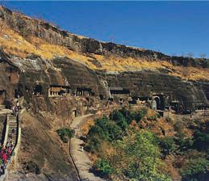<figcaption>Figure fig_ch03_p056_10 (Page 56)</figcaption></figure>
  <figure class="diagram-card" id="fig_ch03_p056_11"><figcaption>Figure fig_ch03_p056_11 (Page 56)</figcaption></figure>
  <figure class="diagram-card" id="fig_ch03_p056_12"><figcaption>Figure fig_ch03_p056_12 (Page 56)</figcaption></figure>
  <figure class="diagram-card" id="fig_ch03_p056_13"><figcaption>Figure fig_ch03_p056_13 (Page 56)</figcaption></figure>
  <figure class="diagram-card" id="fig_ch03_p056_14"><figcaption>Figure fig_ch03_p056_14 (Page 56)</figcaption></figure>
  <figure class="diagram-card" id="fig_ch03_p056_15">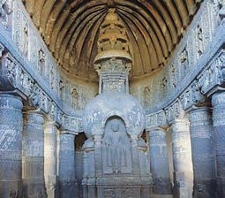<figcaption>Figure fig_ch03_p056_15 (Page 56)</figcaption></figure>
  <figure class="diagram-card" id="fig_ch03_p056_16"><figcaption>Figure fig_ch03_p056_16 (Page 56)</figcaption></figure>
  <figure class="diagram-card" id="fig_ch03_p056_17"><figcaption>Figure fig_ch03_p056_17 (Page 56)</figcaption></figure>
  <figure class="diagram-card" id="fig_ch03_p056_18"><figcaption>Figure fig_ch03_p056_18 (Page 56)</figcaption></figure>
  <figure class="diagram-card" id="fig_ch03_p056_19"><figcaption>Figure fig_ch03_p056_19 (Page 56)</figcaption></figure>
  <figure class="diagram-card" id="fig_ch03_p056_20"><figcaption>Figure fig_ch03_p056_20 (Page 56)</figcaption></figure>
  <figure class="diagram-card" id="fig_ch03_p056_21"><figcaption>Figure fig_ch03_p056_21 (Page 56)</figcaption></figure>
  <figure class="diagram-card" id="fig_ch03_p056_22"><figcaption>Figure fig_ch03_p056_22 (Page 56)</figcaption></figure>
  <figure class="diagram-card" id="fig_ch03_p056_23"><figcaption>Figure fig_ch03_p056_23 (Page 56)</figcaption></figure>
  <figure class="diagram-card" id="fig_ch03_p056_24"><figcaption>Figure fig_ch03_p056_24 (Page 56)</figcaption></figure>
  <figure class="diagram-card" id="fig_ch03_p056_25"><figcaption>Figure fig_ch03_p056_25 (Page 56)</figcaption></figure>
  <figure class="diagram-card" id="fig_ch03_p056_26"><figcaption>Figure fig_ch03_p056_26 (Page 56)</figcaption></figure>
  <figure class="diagram-card" id="fig_ch03_p056_27"><figcaption>Figure fig_ch03_p056_27 (Page 56)</figcaption></figure>
  <div class="page-content">
    <p>Chapter 3</p>
    <p>Some of the world famous paintings of the Ajanta Caves
(Maharashtra) belong to the Gupta period. These paintings
depict royal life, royal court and celestial beings. Scenes from
the Ramayana and the Mahabharata also became themes of these
paintings. Natural colours were used to paint these pictures that
have survived several centuries and still remain graceful.</p>
    <p>3UHSDUHDQGSUHVHQWDGLJLWDOHGLWLRQRIWKHSLFWXUHV
of the temples and caves of the Gupta period.
Sanskrit literature received royal patronage during the Gupta
period. Sanskrit was the language of administration. Even the
%XGGKLVWV ZKR KDG EHHQ XVLQJ FRPPRQ ODQJXDJHV OLNH 3DOL
started writing in Sanskrit. The Ramayana, the Mahabharata and
most of the PuranasZHUHFRGLÀHGLQZULWWHQ/DQJXDJH RUDOWR
written) and converted into the present textual form during this
period.</p>
    <p>56</p>
    <p>Social Science I</p>
  </div>
</section><section class="page-section" id="page-57">
  <div class="page-header"><span class="page-number">Page 57</span></div>
  <figure class="diagram-card" id="fig_ch03_p057_01"><figcaption>Figure fig_ch03_p057_01 (Page 57)</figcaption></figure>
  <figure class="diagram-card" id="fig_ch03_p057_02"><figcaption>Figure fig_ch03_p057_02 (Page 57)</figcaption></figure>
  <figure class="diagram-card" id="fig_ch03_p057_03"><figcaption>Figure fig_ch03_p057_03 (Page 57)</figcaption></figure>
  <figure class="diagram-card" id="fig_ch03_p057_04"><figcaption>Figure fig_ch03_p057_04 (Page 57)</figcaption></figure>
  <div class="page-content">
    <p>Land Grants and the Indian Society</p>
    <p>Dramas, poems, Grammar, and Lexicon were composed during
this period in Sanskrit. The given table shows some of the major
texts of the period.
Name of the Text</p>
    <p>Author</p>
    <p>Genre of Literature</p>
    <p>Abhijnana Sakunthala</p>
    <p>Kalidasa</p>
    <p>Drama</p>
    <p>Kumarasambhava</p>
    <p>Kalidasa</p>
    <p>3RHP</p>
    <p>Mriccha Katika</p>
    <p>Sudraka</p>
    <p>Drama</p>
    <p>Swapnavasavadattha</p>
    <p>Bhasa</p>
    <p>Drama</p>
    <p>Thrikandi</p>
    <p>Bhartrhari</p>
    <p>Grammar</p>
    <p>Amarakosam</p>
    <p>Amarasimha</p>
    <p>Lexicon</p>
    <p>Although Sanskrit dramas are world renowned, when they
were staged, only the so called upper caste male characters
spoke in Sanskrit. Women characters including the queen, and
male characters belonging to castes considered lower used only
3UDNULWODQJXDJH
7KH 6L[ 6\VWHPV RI 3KLORVRSK\ ZKLFK ODLG WKH IRXQGDWLRQ IRU
the Indian philosophical thought also were formulated during
this period. They took shape through mutual debates. Let us
familiarise these philosophies and their proponents.
Philosophy</p>
    <p>Exponent</p>
    <p>Samkhya</p>
    <p>Kapila</p>
    <p>Yoga</p>
    <p>3DWDQMDOL</p>
    <p>Nyaya</p>
    <p>Gauthama</p>
    <p>Vaisheshika</p>
    <p>Kanada</p>
    <p>Vedanta</p>
    <p>Badarayana</p>
    <p>Mimamsa</p>
    <p>Jaimini</p>
    <p>Standard IX</p>
    <p>57</p>
  </div>
</section><section class="page-section" id="page-58">
  <div class="page-header"><span class="page-number">Page 58</span></div>
  <figure class="diagram-card" id="fig_ch03_p058_01"><figcaption>Figure fig_ch03_p058_01 (Page 58)</figcaption></figure>
  <figure class="diagram-card" id="fig_ch03_p058_02"><figcaption>Figure fig_ch03_p058_02 (Page 58)</figcaption></figure>
  <figure class="diagram-card" id="fig_ch03_p058_03"><figcaption>Figure fig_ch03_p058_03 (Page 58)</figcaption></figure>
  <figure class="diagram-card" id="fig_ch03_p058_04"><figcaption>Figure fig_ch03_p058_04 (Page 58)</figcaption></figure>
  <figure class="diagram-card" id="fig_ch03_p058_05"><figcaption>Figure fig_ch03_p058_05 (Page 58)</figcaption></figure>
  <figure class="diagram-card" id="fig_ch03_p058_06"><figcaption>Figure fig_ch03_p058_06 (Page 58)</figcaption></figure>
  <figure class="diagram-card" id="fig_ch03_p058_07"><figcaption>Figure fig_ch03_p058_07 (Page 58)</figcaption></figure>
  <figure class="diagram-card" id="fig_ch03_p058_08"><figcaption>Figure fig_ch03_p058_08 (Page 58)</figcaption></figure>
  <figure class="diagram-card" id="fig_ch03_p058_09">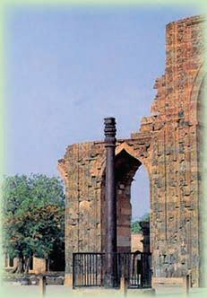<figcaption>Figure fig_ch03_p058_09 (Page 58)</figcaption></figure>
  <figure class="diagram-card" id="fig_ch03_p058_10"><figcaption>Figure fig_ch03_p058_10 (Page 58)</figcaption></figure>
  <figure class="diagram-card" id="fig_ch03_p058_11"><figcaption>Figure fig_ch03_p058_11 (Page 58)</figcaption></figure>
  <figure class="diagram-card" id="fig_ch03_p058_12"><figcaption>Figure fig_ch03_p058_12 (Page 58)</figcaption></figure>
  <figure class="diagram-card" id="fig_ch03_p058_13"><figcaption>Figure fig_ch03_p058_13 (Page 58)</figcaption></figure>
  <div class="page-content">
    <p>Chapter 3</p>
    <p>Science
Books on science also were written during the Gupta period.
Most of the works were on Astronomy, Mathematics, and
Medical Science. Notable works of the period were Brihatsamhita
of Varahamihira, Aryabhatiya of Arya Bhata and Amarakosa of
Amarasimha.</p>
    <p>Metallurgy
The iron pillar built in 4th century CE,
and situated at Mehrauli near Delhi is an
excellent example for the technological
skills achieved in metallurgy during
that period. Weathering the rains and
heat for several centuries, this iron
pillar shows no sign of rusting.</p>
    <p>(YDOXDWH WKH FRQWULEXWLRQV PDGH WR WKH ÀHOG RI
science during the Gupta period.</p>
    <p>South India
We have discussed the granting of land to Brahmins by the Gupta
rulers. The practice of land grants spread to South India by the
6th century CE. This was due to the migration of Brahmins from
1RUWK,QGLDWR6RXWK,QGLD7KH3DOODYDVDQGWKH3DQG\DVZHUH
the important dynasties of South India during the period. They
granted lands to Brahmins and temples. As a result, the Brahmins
attained high status in the South Indian society and economy.
Granting of land to the Brahmins led to the development of
agriculture in this area. As we have seen earlier, the Brahmins&#x27;
knowledge of agricultural technology and climate helped the
expansion of agriculture. Kings and local administrative bodies
encouraged agriculture by building reservoirs and maintaining
irrigation facilities.</p>
    <p>58</p>
    <p>Social Science I</p>
  </div>
</section><section class="page-section" id="page-59">
  <div class="page-header"><span class="page-number">Page 59</span></div>
  <figure class="diagram-card" id="fig_ch03_p059_01"><figcaption>Figure fig_ch03_p059_01 (Page 59)</figcaption></figure>
  <figure class="diagram-card" id="fig_ch03_p059_02"><figcaption>Figure fig_ch03_p059_02 (Page 59)</figcaption></figure>
  <figure class="diagram-card" id="fig_ch03_p059_03"><figcaption>Figure fig_ch03_p059_03 (Page 59)</figcaption></figure>
  <figure class="diagram-card" id="fig_ch03_p059_04"><figcaption>Figure fig_ch03_p059_04 (Page 59)</figcaption></figure>
  <figure class="diagram-card" id="fig_ch03_p059_05"><figcaption>Figure fig_ch03_p059_05 (Page 59)</figcaption></figure>
  <figure class="diagram-card" id="fig_ch03_p059_06"><figcaption>Figure fig_ch03_p059_06 (Page 59)</figcaption></figure>
  <figure class="diagram-card" id="fig_ch03_p059_07"><figcaption>Figure fig_ch03_p059_07 (Page 59)</figcaption></figure>
  <figure class="diagram-card" id="fig_ch03_p059_08"><figcaption>Figure fig_ch03_p059_08 (Page 59)</figcaption></figure>
  <figure class="diagram-card" id="fig_ch03_p059_09"><figcaption>Figure fig_ch03_p059_09 (Page 59)</figcaption></figure>
  <div class="page-content">
    <p>Land Grants and the Indian Society</p>
    <p>7KHUHZDVDJULFXOWXUDOSURJUHVVLQWKH3DOODYD.LQJGRP
due to the activities of the temples controlled by the
Brahmins. Surplus production in agriculture led to the
SURJUHVVRIWUDGH0DULWLPHWUDGHÁRXULVKHGDORQJZLWK
internal trade. Mahabalipuram was a busy port under
WKH3DOODYDV1DJDSDWWDQDPZDVDQRWKHUSRUWRIWUDGH
0HUFKDQW JXLOGV ZDV D IHDWXUH RI WKH 3DQG\DQ WUDGH
The merchant guilds which were known as &#x27;Srenis&#x27; in
North India came to be called as ‘Vanika’ communities
in South India. Each guild specialised in the trade of a
particular product.
¶1DJDUDWWDUV· ZHUH WUDGHUV 3HSSHU VDQGDO JROG DQG
SHDUOVZHUHWKHFKLHILWHPVRIH[SRUWIURPWKH3DQG\DQ
.LQJGRP7KH3DQG\DVWUDGHGZLWKWKH5RPDQ*UHHN
Chinese and Arab merchants through the ports Korkai,
.D\DO 3DWWDQDP DQG 3HUL\D 3DWWDQDP ([SDQVLRQ RI
agriculture, growth of trade, and a variety of crafts
EHFDPH WKH VRXUFHV RI UHYHQXH WR WKH 3DOODYD DQG
3DQG\D .LQJGRPV /DQG WD[ ZDV WKH FKLHI VRXUFH RI
1
LQFRPH3HRSOHKDGWRSD\ 10
to 16 of the produce as
land tax. Those engaged in different crafts had to pay
taxes. At the same time, the Brahmadeya land granted
to temples and the Agraharas (Brahmin villages) were</p>
    <p>Brahmaswam or
Brahmadeya
Land granted to a group
of Brahmins was called
Brahmadeya.</p>
    <p>Agrahara
Brahmin villages were
called agraharas</p>
    <p>Devaswam or
Devadanam
Land gifted to the Deity
or the Temple came to be
called Devadanam. This
land was administered
by the temple trustees.</p>
    <p>exempted from land tax.</p>
    <p>Discuss the economic changes brought about by the spread of
the land grant system to South India.</p>
    <p>Now, let us discuss the social and cultural life of South India.
7KH3DOODYD3DQG\DVRFLHWLHVZHUHEDVHGRQWKHFDVWHV\VWHP7KH
Brahmins who received large extents of land as Brahmadeya were
wealthy and they had a dominant status in society.
Standard IX</p>
    <p>59</p>
  </div>
</section><section class="page-section" id="page-60">
  <div class="page-header"><span class="page-number">Page 60</span></div>
  <figure class="diagram-card" id="fig_ch03_p060_01"><figcaption>Figure fig_ch03_p060_01 (Page 60)</figcaption></figure>
  <figure class="diagram-card" id="fig_ch03_p060_02"><figcaption>Figure fig_ch03_p060_02 (Page 60)</figcaption></figure>
  <figure class="diagram-card" id="fig_ch03_p060_03"><figcaption>Figure fig_ch03_p060_03 (Page 60)</figcaption></figure>
  <figure class="diagram-card" id="fig_ch03_p060_04"><figcaption>Figure fig_ch03_p060_04 (Page 60)</figcaption></figure>
  <figure class="diagram-card" id="fig_ch03_p060_05"><figcaption>Figure fig_ch03_p060_05 (Page 60)</figcaption></figure>
  <figure class="diagram-card" id="fig_ch03_p060_06"><figcaption>Figure fig_ch03_p060_06 (Page 60)</figcaption></figure>
  <figure class="diagram-card" id="fig_ch03_p060_07"><figcaption>Figure fig_ch03_p060_07 (Page 60)</figcaption></figure>
  <div class="page-content">
    <p>Chapter 3</p>
    <p>Those who were considered as low castes suffered many
hardships. There were also sections outside the varna system.
7KHUH ZDV YLOODJH DXWRQRP\ LQ WKH 3DOODYD DQG 3DQG\D
kingdoms. Village courts also existed. Education, justice, etc.
were administered and disputes were discussed and settled
through collective opinion. The Kings did not interfere in such
matters. Neither did they interfere in the customs, practices of
worship or caste rules.
-DLQLVPDQG%XGGKLVPZKLFKZHVWXGLHGHDUOLHUZHUHÁRXULVKLQJ
LQ 6RXWK ,QGLD EHIRUH WKH 3DOODYD SHULRG %XW WKHVH UHOLJLRQV
GHFOLQHGZLWKWKHLQFUHDVHGSRZHURIWKH%UDKPLQV%RWK3DOODYDV
DQG 3DQG\DV EXLOW 6DLYD 9DLVKQDYD WHPSOHV DQG HQFRXUDJHG
the Bhakti movement.
,GHDVRI%UDKPDQLFDOUHOLJLRQDQG%KDNWLZHUHUHÁHFWHGZHOOLQWKH
6RXWK,QGLDQOLWHUDU\ZRUNVRIWKDWSHULRG3DOODYDVHQFRXUDJHG
6DQVNULWOLWHUDWXUH7KH3DOODYDNLQJ0DKHQGUDYDUPDQ,ZDVD
Sanskrit scholar. Matthavilasa Prahasana was written by him.
7HPSOHVRI6RXWK,QGLDKDGDFRQVLGHUDEOHLQÁXHQFHRQWKHOLIH
of the people at that time. Temples were the chief works of art
of that period. Important temples of the period are situated in
Kanchipuram, Mahabalipuram and Madurai. South Indian style
of temple construction known as ‘Dravidian style’ evolved during
WKH SHULRG RI WKH 3DOODYDV *UDGXDOO\ WHPSOH FRQVWUXFWLRQV
developed, through three phases. They are given below.</p>
    <p>zRock-cut temples
zMonolithic chariot temples
zStructural temples</p>
    <p>60</p>
    <p>Social Science I</p>
  </div>
</section><section class="page-section" id="page-61">
  <div class="page-header"><span class="page-number">Page 61</span></div>
  <figure class="diagram-card" id="fig_ch03_p061_01"><figcaption>Figure fig_ch03_p061_01 (Page 61)</figcaption></figure>
  <figure class="diagram-card" id="fig_ch03_p061_02"><figcaption>Figure fig_ch03_p061_02 (Page 61)</figcaption></figure>
  <figure class="diagram-card" id="fig_ch03_p061_03"><figcaption>Figure fig_ch03_p061_03 (Page 61)</figcaption></figure>
  <figure class="diagram-card" id="fig_ch03_p061_04"><figcaption>Figure fig_ch03_p061_04 (Page 61)</figcaption></figure>
  <figure class="diagram-card" id="fig_ch03_p061_05"><figcaption>Figure fig_ch03_p061_05 (Page 61)</figcaption></figure>
  <figure class="diagram-card" id="fig_ch03_p061_06"><figcaption>Figure fig_ch03_p061_06 (Page 61)</figcaption></figure>
  <figure class="diagram-card" id="fig_ch03_p061_07"><figcaption>Figure fig_ch03_p061_07 (Page 61)</figcaption></figure>
  <figure class="diagram-card" id="fig_ch03_p061_08"><figcaption>Figure fig_ch03_p061_08 (Page 61)</figcaption></figure>
  <figure class="diagram-card" id="fig_ch03_p061_09">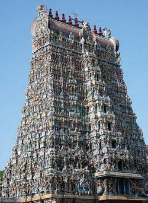<figcaption>Figure fig_ch03_p061_09 (Page 61)</figcaption></figure>
  <figure class="diagram-card" id="fig_ch03_p061_10">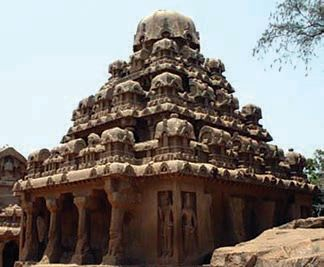<figcaption>Figure fig_ch03_p061_10 (Page 61)</figcaption></figure>
  <div class="page-content">
    <p>Land Grants and the Indian Society</p>
    <p>Mamandur Cave Temple
(Kanchipuram)</p>
    <p>Madurai Meenakshi
Temple</p>
    <p>Chariot Temple at Mahabalipuram</p>
    <p>Dravidian Architecture
Temple building was there in India from ancient times. There were three
styles of temple architecture. ‘Nagara’ and ‘Vasara’ styles were followed in
North India whereas the &#x27;Dravidian&#x27; style prevailed in South India. Huge
mandapas was the chief characteristic of Dravidian architecture.
3DOODYDV ZHUH WKH ÀUVW WR SURYH H[FHOOHQFH LQ &#x27;UDYLGLDQ DUFKLWHFWXUH
7HPSOHV DW 0DKDEDOLSXUDP DUH WKH ÀQHVW H[DPSOHV RI WKHLU H[FHOOHQFH LQ
temple building. At the same time, the largest number of temples in the
Dravidian style were built by the Cholas. Temples built by them during that
period still exist in different parts of Tamil Nadu. The Meenakshi temple
at Madurai and the Srirangam temple are the famous constructions of the
3DQG\DV
7HPSOHV EXLOW LQ WKH &#x27;UDYLGLDQ VW\OH RI DUFKLWHFWXUH KDYH FHUWDLQ VSHFLÀF
features. They are, ‘Sreekovil’ or ‘Garbhagriha’ (Sanctum Sanctorum),
‘Vimana’ (the top portion of the temple building), ‘Sikhara’ (the top</p>
    <p>Standard IX</p>
    <p>61</p>
  </div>
</section><section class="page-section" id="page-62">
  <div class="page-header"><span class="page-number">Page 62</span></div>
  <figure class="diagram-card" id="fig_ch03_p062_01"><figcaption>Figure fig_ch03_p062_01 (Page 62)</figcaption></figure>
  <figure class="diagram-card" id="fig_ch03_p062_02"><figcaption>Figure fig_ch03_p062_02 (Page 62)</figcaption></figure>
  <figure class="diagram-card" id="fig_ch03_p062_03"><figcaption>Figure fig_ch03_p062_03 (Page 62)</figcaption></figure>
  <figure class="diagram-card" id="fig_ch03_p062_04"><figcaption>Figure fig_ch03_p062_04 (Page 62)</figcaption></figure>
  <figure class="diagram-card" id="fig_ch03_p062_05"><figcaption>Figure fig_ch03_p062_05 (Page 62)</figcaption></figure>
  <figure class="diagram-card" id="fig_ch03_p062_06"><figcaption>Figure fig_ch03_p062_06 (Page 62)</figcaption></figure>
  <figure class="diagram-card" id="fig_ch03_p062_07"><figcaption>Figure fig_ch03_p062_07 (Page 62)</figcaption></figure>
  <figure class="diagram-card" id="fig_ch03_p062_08"><figcaption>Figure fig_ch03_p062_08 (Page 62)</figcaption></figure>
  <figure class="diagram-card" id="fig_ch03_p062_09">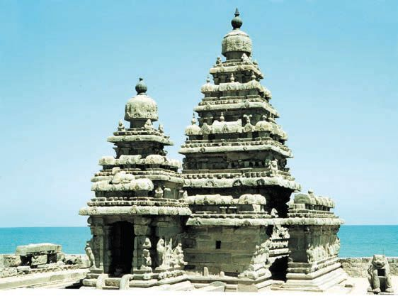<figcaption>Figure fig_ch03_p062_09 (Page 62)</figcaption></figure>
  <figure class="diagram-card" id="fig_ch03_p062_10"><figcaption>Figure fig_ch03_p062_10 (Page 62)</figcaption></figure>
  <div class="page-content">
    <p>Chapter 3</p>
    <p>SRUWLRQ RI WKH YLPDQD  ¶0DQGDSD· DQG ¶3UDGDNVKLQD SDWKD· 3DWK IRU
circumambulation). Gigantic entrance gateways, tall &#x27;gopuras&#x27;, (towers),
carved elephants, horses, and dragon faces in decorative styles are the
characteristic features of the Dravidian style. Characters from Itihasas and
3XUDQDVKDYHEHHQFDUYHGRQWKHZDOOVRIWKHVHWHPSOHVZLWKJUHDWFDUH
and extraordinary skill.
VVVVVV</p>
    <p>Mahabalipuram
The most notable temples
DQGVWRQHFDUYHGÀJXUHVRI
this period can be seen at
Mahabalipuram in Tamil
Nadu. This place, also
known as Mamallapuram,
is situated on the shores of
WKH%D\RI%HQJDO7KHÀYH
monolithic Ratha Temples
representing the five
3DQGDYDV DQG &#x27;UDXSDWL
the Shore Temple built
on the sea shore are the
ÀQHVWH[DPSOHVRI3DOODYD
Shore Temple
architecture. The rock
carved figures called
¶$UMXQD V3HQDQFH·DQG¶0DKLVKDVXUD0DUGDQD·DUHRWKHUH[DPSOHVRI3DOODYD
art. UNESCO has declared Mahabalipuram as a heritage city.</p>
    <p>Extended Activities</p>
    <p>62</p>
    <p>z</p>
    <p>Organise a seminar on ‘Land Grants and their consequences during the
Gupta Rule’.</p>
    <p>z</p>
    <p>3UHSDUHDQDOEXPFROOHFWLQJSLFWXUHVRIWHPSOHVEXLOWLQYDULRXVVW\OHV</p>
    <p>z</p>
    <p>Make a digital presentation on the achievements in science and technology
during the Gupta period.</p>
    <p>Social Science I</p>
  </div>
</section><section class="page-section" id="page-63">
  <div class="page-header"><span class="page-number">Page 63</span></div>
  <figure class="diagram-card" id="fig_ch03_p063_01"><figcaption>Figure fig_ch03_p063_01 (Page 63)</figcaption></figure>
  <figure class="diagram-card" id="fig_ch03_p063_02">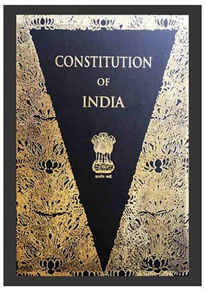<figcaption>Figure fig_ch03_p063_02 (Page 63)</figcaption></figure>
  <figure class="diagram-card" id="fig_ch03_p063_03"><figcaption>Figure fig_ch03_p063_03 (Page 63)</figcaption></figure>
  <figure class="diagram-card" id="fig_ch03_p063_04"><figcaption>Figure fig_ch03_p063_04 (Page 63)</figcaption></figure>
  <figure class="diagram-card" id="fig_ch03_p063_05"><figcaption>Figure fig_ch03_p063_05 (Page 63)</figcaption></figure>
  <figure class="diagram-card" id="fig_ch03_p063_06"><figcaption>Figure fig_ch03_p063_06 (Page 63)</figcaption></figure>
  <figure class="diagram-card" id="fig_ch03_p063_07"><figcaption>Figure fig_ch03_p063_07 (Page 63)</figcaption></figure>
  <figure class="diagram-card" id="fig_ch03_p063_08"><figcaption>Figure fig_ch03_p063_08 (Page 63)</figcaption></figure>
  <figure class="diagram-card" id="fig_ch03_p063_09"><figcaption>Figure fig_ch03_p063_09 (Page 63)</figcaption></figure>
  <figure class="diagram-card" id="fig_ch03_p063_10"><figcaption>Figure fig_ch03_p063_10 (Page 63)</figcaption></figure>
  <figure class="diagram-card" id="fig_ch03_p063_11"><figcaption>Figure fig_ch03_p063_11 (Page 63)</figcaption></figure>
  <figure class="diagram-card" id="fig_ch03_p063_12"><figcaption>Figure fig_ch03_p063_12 (Page 63)</figcaption></figure>
  <figure class="diagram-card" id="fig_ch03_p063_13"><figcaption>Figure fig_ch03_p063_13 (Page 63)</figcaption></figure>
  <figure class="diagram-card" id="fig_ch03_p063_14"><figcaption>Figure fig_ch03_p063_14 (Page 63)</figcaption></figure>
  <figure class="diagram-card" id="fig_ch03_p063_15"><figcaption>Figure fig_ch03_p063_15 (Page 63)</figcaption></figure>
  <figure class="diagram-card" id="fig_ch03_p063_16"><figcaption>Figure fig_ch03_p063_16 (Page 63)</figcaption></figure>
  <figure class="diagram-card" id="fig_ch03_p063_17"><figcaption>Figure fig_ch03_p063_17 (Page 63)</figcaption></figure>
  <figure class="diagram-card" id="fig_ch03_p063_18"><figcaption>Figure fig_ch03_p063_18 (Page 63)</figcaption></figure>
  <figure class="diagram-card" id="fig_ch03_p063_19"><figcaption>Figure fig_ch03_p063_19 (Page 63)</figcaption></figure>
  <figure class="diagram-card" id="fig_ch03_p063_20"><figcaption>Figure fig_ch03_p063_20 (Page 63)</figcaption></figure>
  <figure class="diagram-card" id="fig_ch03_p063_21"><figcaption>Figure fig_ch03_p063_21 (Page 63)</figcaption></figure>
  <div class="page-content">
    <p>4</p>
    <p>DISTRIBUTION OF POWER
IN INDIAN CONSTITUTION</p>
    <p>&quot;Long years ago we made a tryst with destiny, and now the time comes
when we shall redeem our pledge, not wholly or in full measure, but
very substantially. At the stroke of the midnight hour, when the world
sleeps, India will awake to life and freedom.
A moment comes, which comes but rarely in history, when we step out
from the old to new, when an age ends, and when the soul of a nation,
long suppressed, finds utterance. It is fitting that at this solemn
moment, we take the pledge of dedication to the service of India and
her people and to the still larger cause of humanity.&quot;</p>
    <p>7KHDERYHLVDQH[FHUSWIURPRXUÀUVW3ULPH0LQLVWHU-DZDKDUODO1HKUX’s address to the
nation on the eve of India&#x27;s Independence.</p>
  </div>
</section><section class="page-section" id="page-64">
  <div class="page-header"><span class="page-number">Page 64</span></div>
  <figure class="diagram-card" id="fig_ch03_p064_01"><figcaption>Figure fig_ch03_p064_01 (Page 64)</figcaption></figure>
  <figure class="diagram-card" id="fig_ch03_p064_02"><figcaption>Figure fig_ch03_p064_02 (Page 64)</figcaption></figure>
  <figure class="diagram-card" id="fig_ch03_p064_03"><figcaption>Figure fig_ch03_p064_03 (Page 64)</figcaption></figure>
  <figure class="diagram-card" id="fig_ch03_p064_04"><figcaption>Figure fig_ch03_p064_04 (Page 64)</figcaption></figure>
  <figure class="diagram-card" id="fig_ch03_p064_05"><figcaption>Figure fig_ch03_p064_05 (Page 64)</figcaption></figure>
  <figure class="diagram-card" id="fig_ch03_p064_06"><figcaption>Figure fig_ch03_p064_06 (Page 64)</figcaption></figure>
  <figure class="diagram-card" id="fig_ch03_p064_07"><figcaption>Figure fig_ch03_p064_07 (Page 64)</figcaption></figure>
  <div class="page-content">
    <p>Chapter 4</p>
    <p>Nehru appeals to the Constituent Assembly to shake off the evils
of foreign rule and lead the country to a hopeful and responsible
path. India’s independence on 15 August 1947 entrusted a huge and
important responsibility to our Constituent Assembly. People were
subjected to discriminatory, undemocratic and unjust measures under
the British rule. The caste system along with a multitude of other
social evils, and human rights violations that existed in the Indian
society at that time was beyond the imagination of the modern society.
After independence, our national movement and people had the idea
of creating a democratic government and a welfare system that would
address all these problems.
Democratic governance and the construction of a welfare state were
the two most important promises given to the people by independent
,QGLD7KHÀUVWVWHSLQWKLVGLUHFWLRQZDVWKHIRUPDWLRQRIWKH&amp;RQVWLWXHQW
Assembly and the Objective Resolution presented by Nehru.</p>
    <p>From Objective Resolution to the Constitution</p>
    <p>Objective Resolution
z The Constituent Assembly declares its solemn determination to</p>
    <p>make India an independent sovereign republic and to frame a
constitution for it.
z</p>
    <p>The independent sovereign India would be a union of former
British Indian territories, Indian states and other parts outside
British India willing to become a part of the Indian Union.</p>
    <p>z The territories forming the Union of India will be autonomous</p>
    <p>units. In addition, they are vested with all powers and duties not
vested in the Central Government.
z All the powers of an independent sovereign India will emanate</p>
    <p>from the people.
z Social, economic and political justice, equality of status, equality of</p>
    <p>opportunity and equality before the law, as well as fundamental
freedom of speech, expression, belief, worship, profession,
association and assembly, subject to law and public morality, shall
be ensured and protected for all the people of India.</p>
    <p>64</p>
    <p>Social Science I</p>
  </div>
</section><section class="page-section" id="page-65">
  <div class="page-header"><span class="page-number">Page 65</span></div>
  <figure class="diagram-card" id="fig_ch03_p065_01"><figcaption>Figure fig_ch03_p065_01 (Page 65)</figcaption></figure>
  <figure class="diagram-card" id="fig_ch03_p065_02"><figcaption>Figure fig_ch03_p065_02 (Page 65)</figcaption></figure>
  <figure class="diagram-card" id="fig_ch03_p065_03"><figcaption>Figure fig_ch03_p065_03 (Page 65)</figcaption></figure>
  <figure class="diagram-card" id="fig_ch03_p065_04"><figcaption>Figure fig_ch03_p065_04 (Page 65)</figcaption></figure>
  <figure class="diagram-card" id="fig_ch03_p065_05"><figcaption>Figure fig_ch03_p065_05 (Page 65)</figcaption></figure>
  <figure class="diagram-card" id="fig_ch03_p065_06"><figcaption>Figure fig_ch03_p065_06 (Page 65)</figcaption></figure>
  <figure class="diagram-card" id="fig_ch03_p065_07"><figcaption>Figure fig_ch03_p065_07 (Page 65)</figcaption></figure>
  <div class="page-content">
    <p>Distribution of Power in Indian Constitution</p>
    <p>Given above are some of the ideas from the Objective Resolution
presented by Jawaharlal Nehru in the Constituent Assembly on
13 December, 1946. The key ideals put forward by the National
movement are included in the Objective Resolution.
Which ideas put forward by the National Movement were
included in the Objective Resolution?</p>
    <p>z</p>
    <p>Equality of opportunity</p>
    <p>z
z
z</p>
    <p>Standard IX</p>
    <p>65</p>
  </div>
</section><section class="page-section" id="page-66">
  <div class="page-header"><span class="page-number">Page 66</span></div>
  <figure class="diagram-card" id="fig_ch03_p066_01"><figcaption>Figure fig_ch03_p066_01 (Page 66)</figcaption></figure>
  <figure class="diagram-card" id="fig_ch03_p066_02"><figcaption>Figure fig_ch03_p066_02 (Page 66)</figcaption></figure>
  <figure class="diagram-card" id="fig_ch03_p066_03"><figcaption>Figure fig_ch03_p066_03 (Page 66)</figcaption></figure>
  <figure class="diagram-card" id="fig_ch03_p066_04"><figcaption>Figure fig_ch03_p066_04 (Page 66)</figcaption></figure>
  <figure class="diagram-card" id="fig_ch03_p066_05"><figcaption>Figure fig_ch03_p066_05 (Page 66)</figcaption></figure>
  <figure class="diagram-card" id="fig_ch03_p066_06"><figcaption>Figure fig_ch03_p066_06 (Page 66)</figcaption></figure>
  <figure class="diagram-card" id="fig_ch03_p066_07"><figcaption>Figure fig_ch03_p066_07 (Page 66)</figcaption></figure>
  <figure class="diagram-card" id="fig_ch03_p066_08"><figcaption>Figure fig_ch03_p066_08 (Page 66)</figcaption></figure>
  <figure class="diagram-card" id="fig_ch03_p066_09"><figcaption>Figure fig_ch03_p066_09 (Page 66)</figcaption></figure>
  <figure class="diagram-card" id="fig_ch03_p066_10"><figcaption>Figure fig_ch03_p066_10 (Page 66)</figcaption></figure>
  <figure class="diagram-card" id="fig_ch03_p066_11"><figcaption>Figure fig_ch03_p066_11 (Page 66)</figcaption></figure>
  <figure class="diagram-card" id="fig_ch03_p066_12"><figcaption>Figure fig_ch03_p066_12 (Page 66)</figcaption></figure>
  <figure class="diagram-card" id="fig_ch03_p066_13"><figcaption>Figure fig_ch03_p066_13 (Page 66)</figcaption></figure>
  <figure class="diagram-card" id="fig_ch03_p066_14"><figcaption>Figure fig_ch03_p066_14 (Page 66)</figcaption></figure>
  <div class="page-content">
    <p>Chapter 4</p>
    <p>Identify the ideas presented in the Objective Resolution that
were included in the Preamble of the Constitution of India and
compare them.
z Sovereignty to people
z
z
z</p>
    <p>Isn&#x27;t it clear that the various ideas of the Objective Resolution are
included in the Preamble of our Constitution? Let us examine
how adequate the provisions of the Constitution are to realize
the ideals, visions and objectives and the like mentioned in the
Preamble.</p>
    <p>Features of the Constitution
The Constitution of India was drafted by the Drafting Committee
of the Constituent Assembly constituted on 6th December 1946
on the recommendation of the Cabinet Mission, which lasted
for 2 years, 11 months and 17 days from 9 December 1946. The
Constitution of India, adopted on 26 November 1949, had 395
articles and 8 schedules in 22 parts. The Constitution of India
that came into force on 26 January 1950 continues to be a living
document, incorporating changes from time to time.
Many of the ideas upheld by the Indian Nationalist Movement
and mentioned in the Objective Resolution have become a part
of the Constitution. Let us know the features of the Constitution
which was prepared after detailed studies and discussions.</p>
    <p>The largest written
Constitution</p>
    <p>Parliamentary
Democracy</p>
    <p>66</p>
    <p>Social Science I</p>
    <p>A comprehensive and extensive document
containing about one and a half million
words. Detailed content considering the
diversity and vastness of the country.</p>
    <p>Members of the executive are drawn
from the legislature, and the legislature
controls the executive.</p>
  </div>
</section>
    </main>
    <footer>
      <div class="nav-bar"><a href="part_1_chapter_02.html">← Chapter 2 (Pages 27-46)</a><a href="index.html">☰ Index</a><a href="part_1_chapter_04.html">Chapter 4 (Pages 67-86) →</a></div>
      <p style="text-align: center; font-size: 0.85rem; color: var(--text-muted); margin-top: 2rem;">
        Kerala SCERT Class 9 Basic_science (English Medium) - Extracted Study Text
      </p>
    </footer>
  </div>
</body>
</html>
